小牙卫士
儿童牙齿矫正早筛 · AI 儿童面型口腔智能筛查
早发现早矫正，守护孩子面部发育黄金期
早发现早矫正，守护孩子面部发育黄金期
小牙卫士
AI 面型口腔智能筛查
温馨提示：请确保孩子在自然光线下，面部无遮挡。拍摄正面照和侧面照各一张，并录制一段15秒说话、读书或吃饭咀嚼的视频，AI 将综合分析面部特征与动态口腔功能，评估牙齿与面型健康风险。
拍照上传
2-3 张照片 + 15秒视频
AI 分析
3 秒出结果
风险评估
7 项指标
就医导航
推荐附近诊所
填写基本信息
口腔知识库
科普筛查知识
关于我们
了解小牙卫士
1/3 正面照


请拍摄正面照
让孩子自然放松，直视镜头

AI 正在分析中...
面部关键点检测（478 点）
软组织测量计算
深度学习分类分析
生成风险评估报告
需要关注
小明的筛查报告
6 岁 · 男 · 2026年6月23日
筛查结果
反颌（地包天）
检测到下颌前突，存在反颌倾向，建议尽早就诊
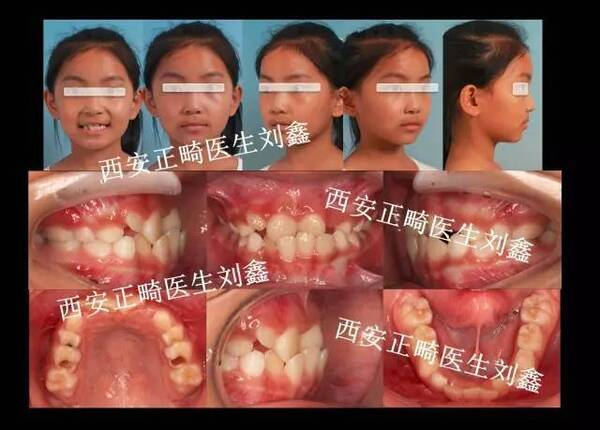
儿童反颌
照片释义：9岁女童替牙期前牙反合口内照。可见下前牙咬在上前牙外侧，是典型的"地包天"表现。
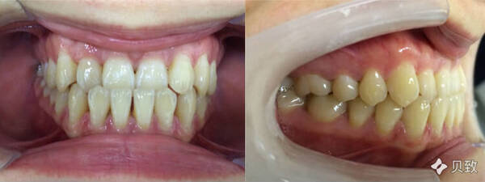
成人反颌
照片释义：成人地包天矫正前咬合侧面照。下颌明显前突，若儿童期不及时干预，骨骼定型后矫治难度大幅增加。
这是什么？下牙咬在上牙外面，俗称"地包天"，侧面可见下颌前突。
为什么重要？3-5岁是最佳矫治期，延误可能导致骨骼畸形，形成"月牙脸"。
建议：观察孩子侧面轮廓，如下巴明显前突，建议尽早就诊。
视频观察：说话或吃饭时，下颌是否习惯性前伸，前牙是否无法正常切割食物。
深覆合
下面高比例略低，存在轻度深覆合可能
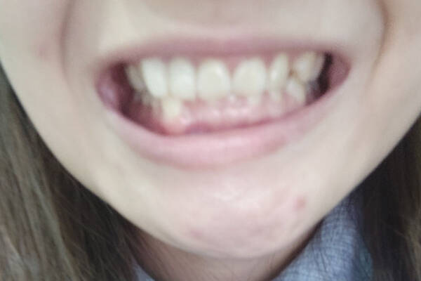
儿童深覆合
照片释义：儿童III度深覆合临床照。上前牙几乎完全遮住下前牙，下牙只能看到很小一部分，长期可导致牙齿过度磨损。
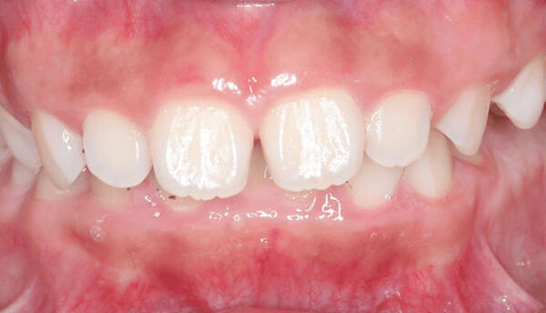
成人深覆合
照片释义：成人深覆合口内咬合照。下前牙被上前牙完全覆盖，长期压迫可导致牙龈损伤和颞下颌关节疼痛。
这是什么？上前牙完全覆盖下前牙，垂直距离过小。
为什么重要？可能导致牙齿磨损、颞下颌关节问题，长期影响面部下1/3发育。
建议：让孩子自然咬合，从侧面观察，如果下牙几乎看不到，需关注。
视频观察：说话或咀嚼时，下颌运动是否受限，前牙是否无法参与切割食物。
深覆盖
上唇突出度在正常范围内
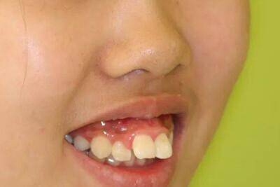
儿童深覆盖
照片释义：深覆盖病例口内照。上前牙明显前突，水平方向覆盖下前牙过多，外伤风险高且影响嘴唇自然闭合。
成人错颌畸形
照片释义：成人错颌畸形牙齿排列照。可见牙齿排列不齐、前突，儿童期未及时矫正导致骨骼与牙齿问题叠加。
这是什么？上前牙过度前突，水平覆盖过大，上唇突出度偏高。
为什么重要？容易导致外伤风险，影响唇部闭合和口呼吸。
建议：从侧面观察上唇是否明显前突，自然状态下嘴唇能否闭合。
视频观察：说话时是否发音不清，前牙是否影响唇齿音（如"f""v"音）的发出。
口呼吸
唇间隙偏大（约 4mm），疑似口呼吸习惯
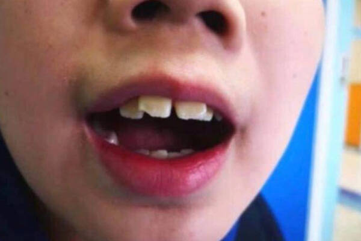
儿童口呼吸面容
照片释义：口呼吸儿童面部特征。可见唇间隙增大、下颌后缩、面部狭长，长期不干预会形成典型的"腺样体面容"。
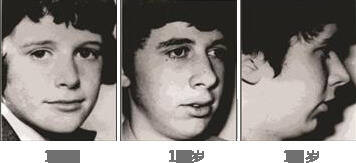
长期口呼吸影响
照片释义：长期口呼吸对颌骨发育的影响。上颌狭窄、牙弓变形，儿童期是干预关键期，成年后骨骼已定型。
这是什么？习惯性用嘴而非鼻子呼吸，唇间隙宽度偏大（>3mm）。
为什么重要？长期口呼吸影响颌骨发育，导致"腺样体面容"，还影响注意力和睡眠质量。
建议：孩子睡觉时是否张嘴？如有需排查腺样体肥大，尽早干预。
视频观察：说话时是否鼻音重、声音含糊，休息时下颌是否习惯性下垂张嘴。
鱼嘴唇
唇部外翻程度轻度异常
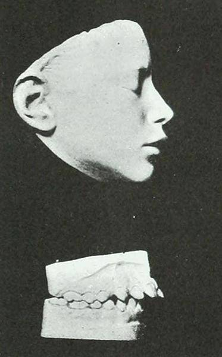
儿童开颌
照片释义：吮指导致的前牙开颌口内照。上下前牙间存在明显垂直间隙，无法咬合切断食物，常伴有发音不清。
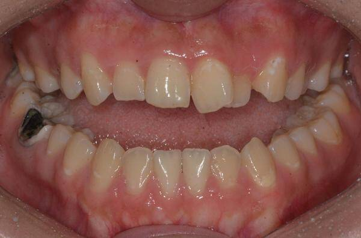
成人开颌
照片释义：成人开颌口内正面照。前牙完全无法接触，严重影响咀嚼功能和美观，儿童期纠正不良习惯可预防。
这是什么？上下前牙无法正常接触，存在垂直间隙，常由吮指、吐舌等习惯引起。
为什么重要？影响咀嚼功能和发音清晰度，长期可导致颌骨发育异常。
建议：观察孩子放松时嘴唇能否自然闭合，是否有吮指、吐舌等习惯。
视频观察：说话时是否漏风、发音不清（如"s""z"音），吞咽时舌头是否前伸。
不良口腔习惯
检测到吮指/咬物习惯，可能导致牙齿移位

吮指致牙齿变形
照片释义：长期吮指导致的上前牙前突、前牙开颌。手指持续压迫使牙齿向异常方向生长，3岁后仍吮指需高度警惕。
成人不良习惯后果
照片释义：儿童期不良习惯未纠正导致的成人开颌。前牙垂直间隙明显，矫治难度和费用远高于儿童期早期干预。
这是什么？包括吮指、咬唇、吐舌、咬铅笔等习惯，可能导致牙齿移位。
为什么重要？3-6岁是习惯形成高峰期，持续不良习惯会导致开颌、反颌等畸形。
建议：留意孩子是否有吮手指（>3岁仍持续）、咬铅笔、吐舌头等行为。
视频观察：说话时是否伴随咬唇、吐舌动作，咀嚼时是否有异常下颌运动。
单侧咀嚼
面部对称度轻微偏差，建议关注
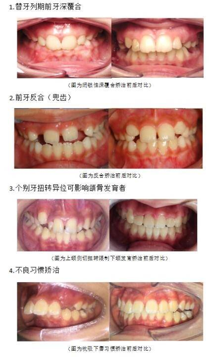
儿童偏侧咀嚼面容
照片释义：10岁患儿偏侧咀嚼致面部不对称早期矫治照。可见面部左右明显不对称，患侧肌肉萎缩，健侧过度发育。
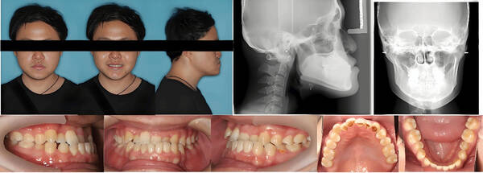
成人偏颌畸形
照片释义：26岁男性骨性偏颌伴下颌偏斜治疗前面相照。面部严重不对称，咬合平面倾斜，成年后常需正颌手术治疗。
这是什么？长期只用一侧咀嚼食物，导致面部不对称、大小脸。
为什么重要？长期单侧咀嚼导致大小脸，影响颞下颌关节和咬合平衡。
建议：观察孩子吃饭时是否总偏向一侧，面部左右是否对称。
视频观察：吃饭时是否只用一侧咀嚼，另一侧是否基本不参与食物研磨。
就医建议
建议尽快就诊
检测到疑似口呼吸习惯，建议尽快到口腔科或耳鼻喉科就诊，排除腺样体肥大等问题。长期口呼吸可能影响面部发育和注意力。
建议定期复查
深覆合、鱼嘴唇、面部对称度存在轻度异常，建议 3 个月后复查，或到正畸科做专业评估。6-12 岁是早期干预的黄金窗口期。
正常项目
反颌、深覆盖、不良口腔习惯均未检测到异常，请继续保持良好的口腔卫生习惯。
72%
中国儿童错颌畸形患病率
0.95%
早期干预率
71.9%
儿童龋齿患病率
3.1%
龋齿治疗率
七项筛查科普
反颌（地包天）
什么是反颌
下牙咬在上牙外面，俗称"地包天"。侧面可见下颌前突、面中部凹陷。
为什么重要
影响咀嚼功能和面部美观，3-5岁是最佳矫治期，延误可能导致骨骼畸形。
家长注意
观察孩子侧面轮廓，如果下巴明显前突，建议尽早就诊。
深覆合
什么是深覆合
上前牙完全覆盖下前牙，垂直距离过小。下面高比例偏低。
为什么重要
可能导致牙齿磨损、颞下颌关节问题，长期影响面部下1/3发育。
家长注意
让孩子自然咬合，从侧面观察，如果下牙几乎看不到，需关注。
深覆盖
什么是深覆盖
上前牙过度前突，水平覆盖过大。上唇突出度偏高。
为什么重要
容易导致外伤风险（如摔倒磕断前牙），影响唇部闭合和口呼吸。
家长注意
从侧面观察上唇是否明显前突，自然状态下嘴唇能否闭合。
口呼吸（重要）
什么是口呼吸
习惯性用嘴而非鼻子呼吸，唇间隙宽度偏大（>3mm）。
为什么重要
长期口呼吸影响颌骨发育，导致"腺样体面容"，还影响注意力和睡眠质量。
家长注意
孩子睡觉时是否张嘴？白天是否习惯性微张嘴？如有需排查腺样体肥大。
鱼嘴唇
什么是鱼嘴唇
唇部外翻、增厚，唇闭合不全。可能与口呼吸或不良习惯有关。
为什么重要
唇部肌肉力量失衡会影响牙齿位置，是错颌畸形的早期信号之一。
家长注意
观察孩子放松时嘴唇能否自然闭合，是否有吹泡泡、咬唇等习惯。
不良口腔习惯
什么是不良习惯
包括吮指、咬唇、吐舌、咬物等习惯，可能导致牙齿移位。
为什么重要
3-6岁是习惯形成高峰期，持续不良习惯会导致开颌、反颌等畸形。
家长注意
留意孩子是否有吮手指（>3岁仍持续）、咬铅笔、吐舌头等行为。
单侧咀嚼
什么是单侧咀嚼
长期只用一侧咀嚼食物，导致面部不对称。
为什么重要
长期单侧咀嚼导致大小脸，影响颞下颌关节和咬合平衡。
家长注意
观察孩子吃饭时是否总偏向一侧，面部左右是否对称。
AI 是如何分析的？
MediaPipe 478点面部关键点检测
→
软组织比例测量
→
ResNet50深度学习分类
94.7%
诊断准确率
（上海九院数据）
（上海九院数据）
>0.95
AUC
模型评估指标
模型评估指标
项目简介
小牙卫士是一款基于 AI 面部识别技术的儿童口腔健康筛查小程序。
通过 2-3 张面部照片，3 秒内完成 7 项口腔健康风险评估。
让每个家庭都能便捷地获取专业的口腔健康初筛服务。
市场数据
125亿
AI辅助检测市场规模
231.5亿
儿童齿科市场规模
21%
年复合增长率
<1万
全国儿童正畸医生
商业模式
C端
免费筛查 + 增值服务订阅（深度报告、跟踪管理）
B端
口腔诊所引流 + 转诊佣金
数据
匿名数据服务 + 科研合作
社会价值